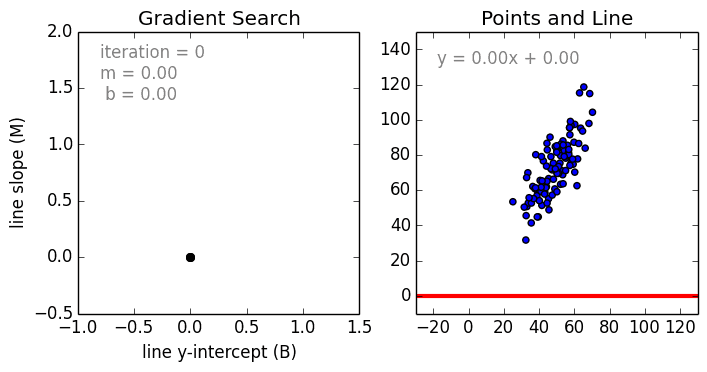

v.
Overview
- Briefly explain supervised learning
- Focus on classification problem
- Discuss linear and non-linear regressions
- Find out how to convert regression problems to classification problems
Different ML Approaches
Learning
Learning
Learning
Learning
Learning
break down these techniques into groups
easier for us to talk about
ML $\not =$ Neural Networks
Supervised Learning
- For supervised learning tasks, we have data that already has the 'thing' we want to know (sometimes called outputs or labels) and a set of related parameters
-
House price: year of sale, number of bedrooms, total area, ...
Car or Dog: pointy ears, colour, length of tail, breed, ...
Game score: number of players, current game state, number of lives, ... - What's the point in asking the question if we already know the answer?
- use the data to train a model to make predictions when we don't know the answer
Supervised Learning (2)
- We have a set of labelled data (from somewhere)
- Labels = the thing we want to know
- ‘Correctness’ is how well it maps input data to labels
- Two major ‘types’ of label: categorical and continuous
Regression
Regression Example (Recall)
We're essentially finding a 'line of best fit' in multiple dimensions
e.g. stock price, driving speed, estimated score when game over, ...
Linear Regression or Nonlinear Regression
Linear vs. Non-Linear Regression
Can be roughly seen from Scatter Plot of the raw data
Data points have a pattern that looks like a Straight Line indicates a linear regression problem
Linear Regression
Linear Regression
- Input: $X$, output: $Y$
- Linear correlation between $X$ and $Y$ (with some noises) $\qquad\qquad\qquad\quad\;\;$
- Hours of studying vs. final marks
- Bottles of beers at night vs. coding skill
Linear Regression (2)
$\hat{y}=\theta_0 +\theta_1 x_1+\theta_2 x_2+\cdots+\theta_n x_n$
- $\^{y}$ is the predicted value
- $n$ is the number of features
- $x_i$ is the $i^{th}$ feature value
- $\theta_j$ is the $j^{th}$ model parameter (including the bias term $\theta_0$ and the feature weights $\theta_1, \theta_2, \cdots, \theta_n$
Linear Regression (3)
More concisely: $$\^{y} = h_{\theta}(x) = \theta^T \cdot x$$
Linear Regression (4)
Which hypothesis model/model parameters would be the best?
$$J(\theta) = MSE(X, h_{\theta}) = \frac{1}{m}\sum_{i=1}^{m} (h_{\theta}(x^{(i)}) - y^{(i)})^2$$Objective: minimise loss function $J(\theta)$ (e.g. MSE)
Analytical solution for $\^{\theta}$ minimises $J(\theta)$:
Polynomial Regression
Polynomial Regression
Solve the problems that are more complex than linear, e.g. Ballmer's peak
Polynomial Regression (2)
More seriously ...Increase the degrees/order of the polynomial equation
Polynomial Regression (3)
How to choose the best degree for polynomial model?What happened in the case of $d=300$? How about $d=1$?
overfitting if $d=300$ and underfitting if $d=1$
Polynomial Regression (4)
How can we tell if the model suffers from underfitting?Hint: loss on both training and validation sets converges to a large value
Fix: increase model complexity
Polynomial Regression (5)
How can we tell if the model suffers from overfitting?Hint: there is a big gap in losses for training and validation sets
Fix: increase training data size, reduce training time
Regularisation
- Occam's razor (Ockham, $14^{th}$ century)
Entities should not be multiplied unnecessarily
- Make it more clear:
when you have two competing theories that make exactly the same predictions, the simpler one is the better
- Idea: capture model complexity in the cost function
- i.e. cost function = loss + model complexity
Regularisation (2)
- Idea: capture model complexity in the cost function
- i.e. cost function = loss + model complexity
- Ridge regression (Tikhonov regularisation): linear regression + regularisation
- $J(\theta)=MSE(\theta)+\alpha \frac{1}{2} \sum_{i=1}^n \theta_i^2$
- LASSO (Least Absolute Shrinkage and Selection Operator Regression)
- $J(\theta)=MSE(\theta)+\alpha \sum_{i=1}^n \vert \theta_i \vert$
- Elastic Net:
- $J(\theta)=MSE(\theta)+r \alpha \sum_{i=1}^n \vert \theta_i \vert + \frac{1-r}{2} \alpha \sum_{i=1}^n \theta_i^2$
Solve Regularised Model
Closed form solution for ridge regression: $$ \^{\theta} = (X^T \cdot X + \alpha A)^{-1}\cdot X^T \cdot y $$
LASSO + Elastic Net: gradient descent approach
Gradient Descent
$\theta^{next \> step} = \theta - \gamma \nabla_{\theta} MSE(\theta) $
Main issue: need whole training set to calculate the error and the gradients
Regression as Classifier
- Logistic regression: computes the probability that $\qquad\qquad\qquad\qquad\qquad$
the data belongs to a certain type- $\qquad\qquad \^{p} = h_{\theta}(x) = \sigma (\theta^T \cdot x)$
- Linear regression $\implies$ logistic regression (sigma)
- the logistic (logit) is a sigmoid function
- $\qquad\qquad \^{y} = \begin{cases} 0 & if \> \^{p} \lt 0.5 \\ 1 & if \> \^{p} \ge 0.5 \end{cases} $
Regression as Classifier (2)
- Train the logistic regression model: $$J(\theta)= - \frac{1}{m} \sum_{i=1}^m [y^{(i)}log(\^{p}^{(i)}) + (1-y^{(i)})log(1-\^{p}{(i)})]$$
- This is the log loss:
- No closed form solution
- SGD can find a local minimum efficiently
Regression as Classifier (3)
- Softmax regression: multi-class classification
- Idea: maintain a score for each class
- Use these scores to calculate the probability of likelihood
- Softmax score: $s_k (x) = \theta_k^T \cdot x$
- Softmax function:
- $\^{p} = \sigma(s(x))_k = \frac{exp(s_k(x))}{\sum_{j=1}^K exp(s_j (x))}$
- $K$ is the number of classes
- $s(x)$ is a vector containing the scores of each class for the instance $x$
- $\sigma(s(x))_k$ is the estimated probability that the instance $x$ belongs to class $k$
Summary
- Review supervised learning
- Explain regression problem
- When regression becomes classification (next session)
Questions?